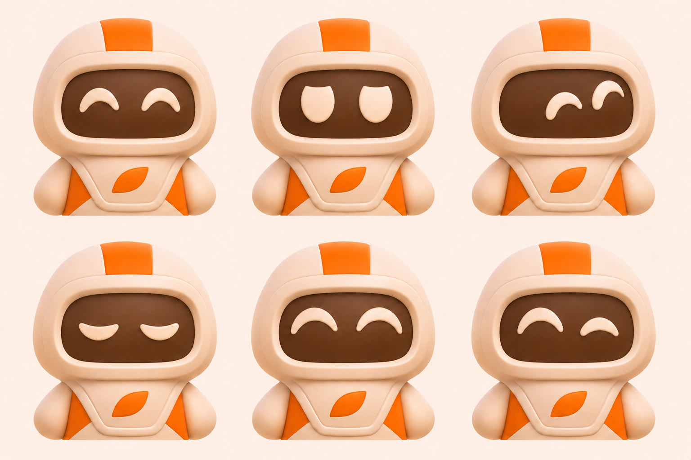
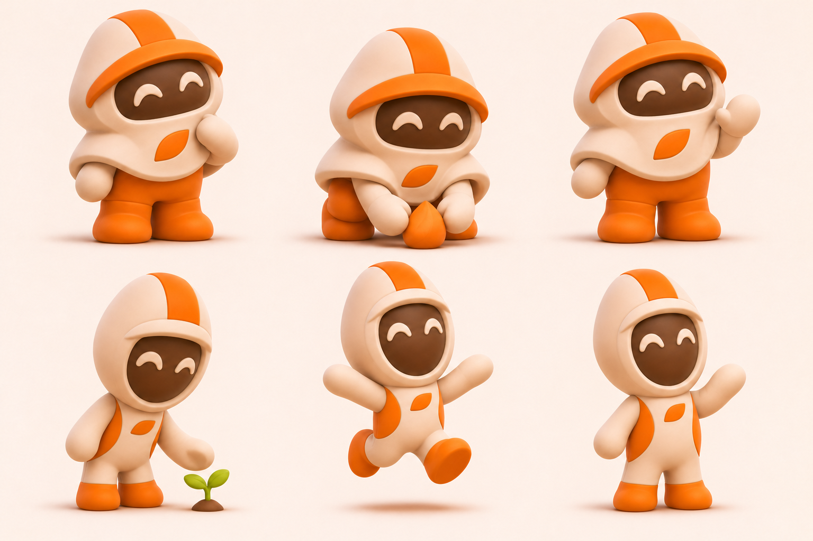

SOWERS / DESIGN ITERATION 15
A little helper with a point of view.
Expression and gesture proposals for watching the Sowers work. The warm cream, orange, cocoa face and seed identity carry across the studies.
Scout / six expressions

01 · Content02 · Focused03 · Curious04 · Patient waiting05 · Pleased06 · Seeking attention
Read left to right, top row then bottom row. Curiosity and attention are still similar; pleased is only mildly different from content. These remain expression proposals.
Canopy Keeper + Pod Pal / helper gestures

Canopy Keeper: curious inspection · careful seed handling · reassuring wave.
Pod Pal: quiet observation · buoyant hop · attentive settle.
The same two character designs carry through the still-pose study. Seed placement and motion timing remain open; this sheet is a visual guide.
Return to the blend garden